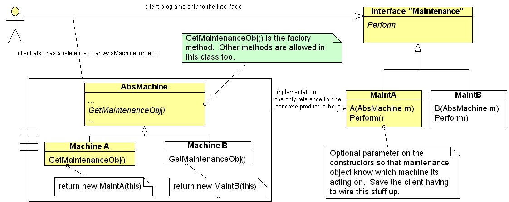

Footnote: GOF Factory Method - more complete example
Here is a more complete example of factory method.

Factory method:
| subclasses override the factory method method and return the appropriate product relating to their subtype, using code. | |
| client refers to the abs prod. interface only. |
The yellow indicated the client dealing with the A version of classes.